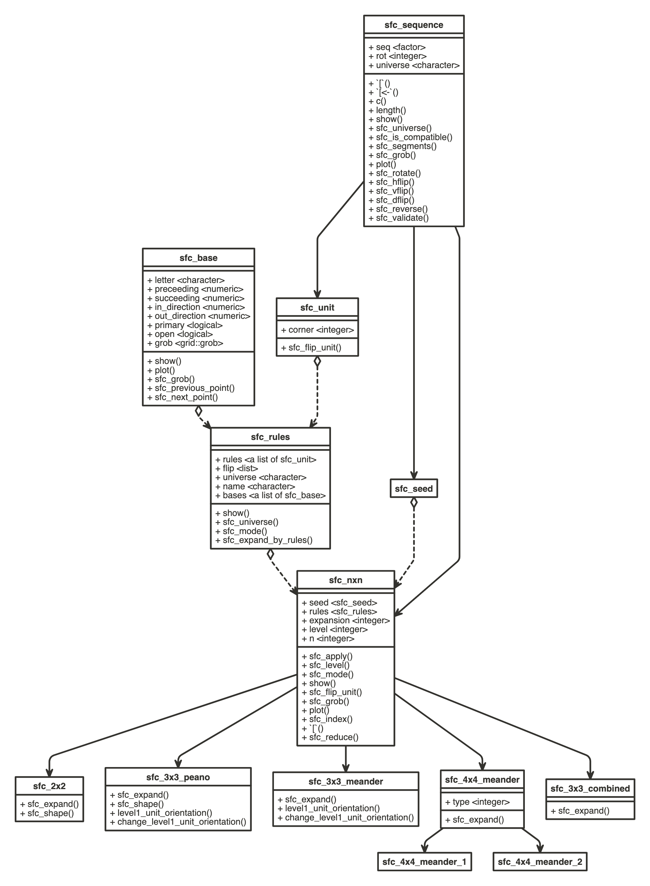

Functions/Classes
Zuguang Gu (z.gu@dkfz.de)
2024-09-05
Source:vignettes/functions.Rmd
functions.RmdFunctions
Here lists the major high-level functions implemented in this package.
Make curves
Make general curves:
sfc_2x2(), sfc_3x3_peano(), sfc_3x3_meander(), sfc_h().
Make curves in their standard forms:
hilbert_curve(), moore_curve(), beta_omega_curve(), peano_curve(), meander_curve(), h_curve().
Other curves:
sfc_3x3_combined(), sfc_4x4_meander(), hilbert_3d().
Generate nxn curves based on specific level-1 units:
Expansion rules
Pre-defined expansion rules:
SFC_RULES_2x2, SFC_RULES_3x3_PEANO, SFC_RULES_3x3_MEANDER, SFC_RULES_3x3_COMBINED, SFC_RULES_4x4_MEANDER_1, SFC_RULES_4x4_MEANDER_2.
Draw these rules:
draw_rules_2x2(), draw_rules_3x3_peano(), draw_rules_3x3_meander(), draw_rules_3x3_combined(), draw_rules_4x4_meander().
Unit flipping
sfc_apply(), unit_orientation(), sfc_flip_unit(),
level1_unit_orientation(), change_level1_unit_orientation().
Classes
There are the following classes defined:
-
sfc_sequence: the most general class for a sequence of letters. -
sfc_seed: essentially the same assfc_sequence. This class is used as a mark representing the object can only be used as the seed for generating curves. -
sfc_unit: only used when constructing the expansion rules. It is a sequence on level-1 of the curve. There is also an additional slotcornerwhich corresponds to the corners of the in and out-direction of the square level-1 unit. -
sfc_nxn: the base class for the general nxn curves. -
sfc_2x2,sfc_3x3_peano,sfc_3x3_meander,sfc_3x3_combined,sfc_meander_4x4are all child classes ofsfc_nxn. - Specifically
sfc_meander_4x4has two child classessfc_meander_4x4_1andsfc_meander_4x4_2using two different sets of expansion rules.
The following two classes define how the curve is expanded:
-
sfc_base: for the base patterns (i.e. level-0). It defines the previous point and the next points -
sfc_rules: It contains the expansion rules from level-0 to level-1.
The UML of classes and their corresponding methods implemented in this package (made by nomnoml).
